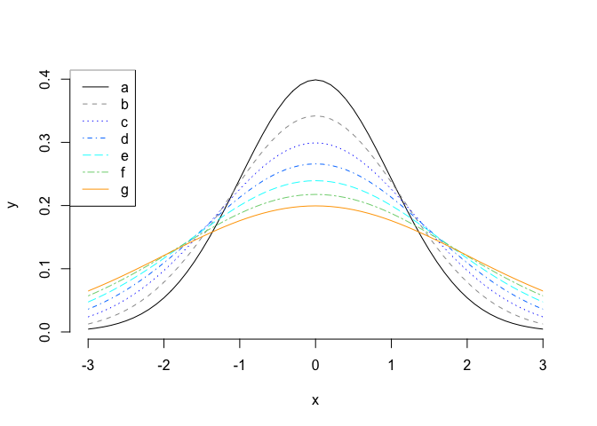
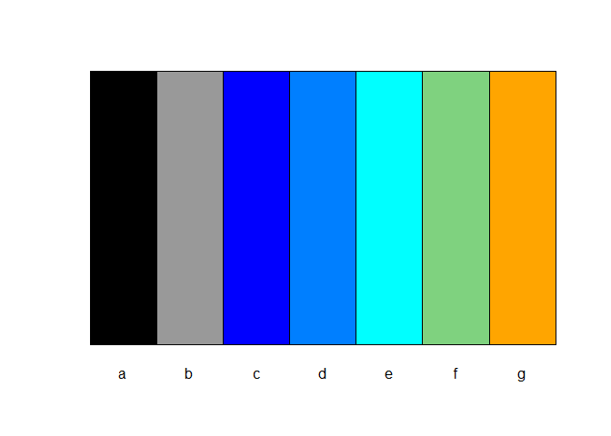

The purpose of this package is to share a collection of functions the author wrote during weekends for managing kitchen and garden tasks, e.g. making plant growth charts or Thanksgiving kitchen schedule charts, etc. Functions might include but not limited to: (1) aiding summarizing time related data; (2) generating axis transformation from data; and (3) aiding Markdown (with HTML output) and Shiny files editing.
Installation
You can install the newest version of mtb like so:
install.packages('mtb')You can install the development version of mtb like so:
devtools::install_github('yh202109/mtb',ref='main')Example - Selecting and Testing Colors
This is a basic example which shows you how to automatically select colors for individual groups by 3 major colors, blue, cyan and orange. The first argument represent group values. The second argument specify the order of to , the third argument specifies that group is assigned to the black color, and group is assigned to the gray color.
library(mtb)
colvect = color_set_palette(c('a','b','d','c','e','f','g'), c(1,2,4,3,5,6,7),black='a',gray9='b',cols=c('blue', 'cyan','orange'))This is a basic example which shows you how to quickly test selected colors:
color_test_palette(colvect, type='line')
color_test_palette(colvect, type='bar')
Example - R markdown or Shiny components
This is a basic example which shows you how to format a string:
add_colored_str('Example - Warning', color=c(255,0,0), bold=TRUE, fontsize=1.5)Example - Warning
This is an example which shows you how to add a default box:
add_colored_box(info='additional information')This is an example which shows you how to add a warning box:
add_colored_box(type='yellow-warning', info='Here is the warning message.')